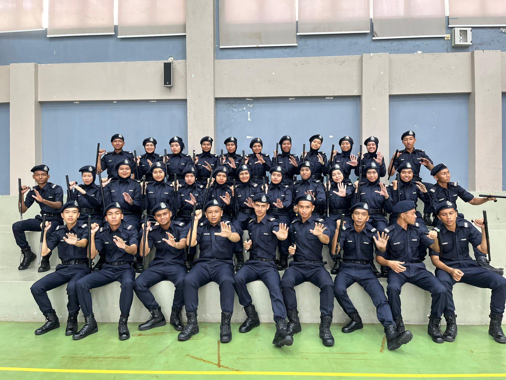

In this page, i will share interest and my hobbyINTEREST :I like doing business because I can give satisfaction to customers. Among the items I sell are iphones, airpods, adapters, usb, and other gadgets I am interested in becoming a police officer one day, so I took the opportunity at UiTM by joining KOR SUKSIS. I also have been appointed as squad leader of squad 11 HOBBY :This is a kelisa fish or better known as Arowana. This fish is very precious to me because I defend it from small size to large size. I named this fish Fasha I love setting up aquariums, choosing different fish species, and creating beautiful underwater landscapes. It's fascinating to see how each species interacts and thrives in their environment. It's a hobby that's both relaxing and rewarding. . |